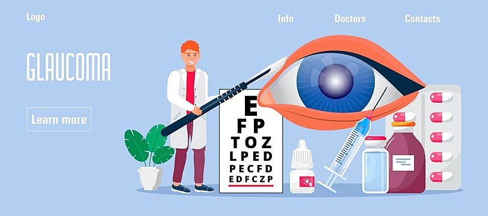
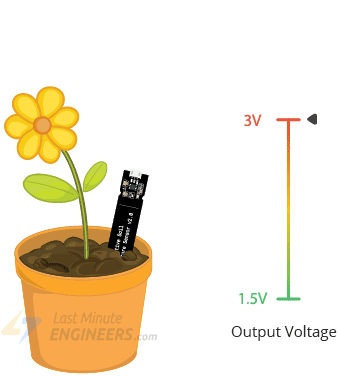

Hello! I'm Vikash,an aspiring AI enthusiast currently pursuing my studies in the field of Artificial Intelligence. My journey in AI began with a fascination for its potential to transform industries and improve lives. I'm dedicated to exploring the depths of machine learning, neural networks, and data analysis to create innovative solutions. I'm excited to contribute to the exciting world of AI-driven technologies.
My passion for utilizing artificial intelligence for real-world impact led me to undertake a project focused on glaucoma detection using deep learning. This project aimed to develop an automated system capable of identifying signs of glaucoma in retinal images. By training convolutional neural networks on a diverse dataset of eye scans, I created a model that can assist in early glaucoma diagnosis. The potential to revolutionize eye healthcare and enhance patient outcomes drives my dedication to AI-driven medical advancements.
My foray into the Internet of Things (IoT) realm led me to develop a project focused on soil moisture sensing. By integrating IoT technology with soil sensors, I created a system that provides real-time data on soil moisture levels. This data can be remotely accessed and monitored, enabling efficient irrigation and optimal plant growth. Through the synergy of IoT and agriculture, this project showcases my commitment to harnessing technology for sustainable solutions in the realm of precision agriculture.
You can reach me at 20uad016@kamarajengg.edu.in